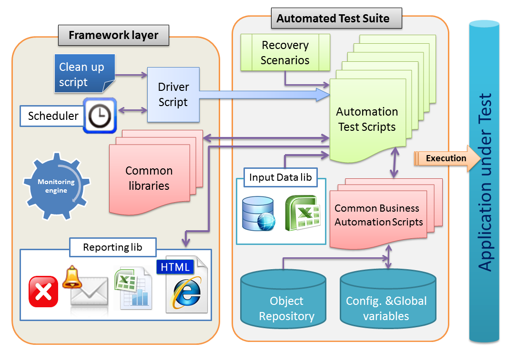
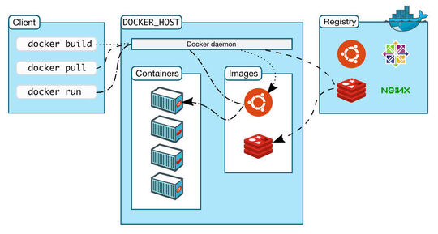

SQA Automation Engineer
pre-interview survey
1. Quality Assurance studies, certification, trainings
Do you have any SQA / DevOps / SecDevOps / AQA education or certification?
Describe all available formal proficiency proofs
you have from the respected 3rd-parties.
2. SQA theory basics
Suppose you have to evaluate connection stability
between a phone and a wearable device.
How would you implement a. load testing b. stress testing?
Which metrics would you use?
3. Embedded devices SQA automation experience
Supposed there is a target phone that is used in exclusive mode remotely
(no parallel test execution is possible).
How would you organize automated concurrent testing?

4. Containers / emulators / simulators
Let us understand your expertize with Docker, QEMU, XenN, GEM5, Singularity.
Give scenarios where you would prefer:
- virtualization
- containerization
- emulation
Give examples from your commercial experience.

5. The following question covers Linux Device Model understanding
A WEB camera is inserted into USB hub. Briefly describe what happens next:
- how Linux Kernel detects new device and looks for a driver
- what is the device initialization procedure, up until it appears in /dev

6. The following question covers understanding of applied crypto
You are challenged to build a simple peer-to-peer chat (2 peers, simple text).
Describe basic security needs. Suggest algorighms and protocols to cover these needs. At least, consider:
- initial trust establishment
- communication channel security
Comments on strong/weak crypto, advanced features (forward secrecy oth.) and examples from industry are welcome.

Please evaluate your expertise in various domains.
This will help to adjust expectations, interview questions and salary rates.
3. Describe nuances of using static keyword.
Which type of memory is used for storing such variables?
Which best practices or typical situations do you know where static keyword helps?
a.h
static int a1;
b.c
#include "a.h"
int f()
{
a1 = 1;
}